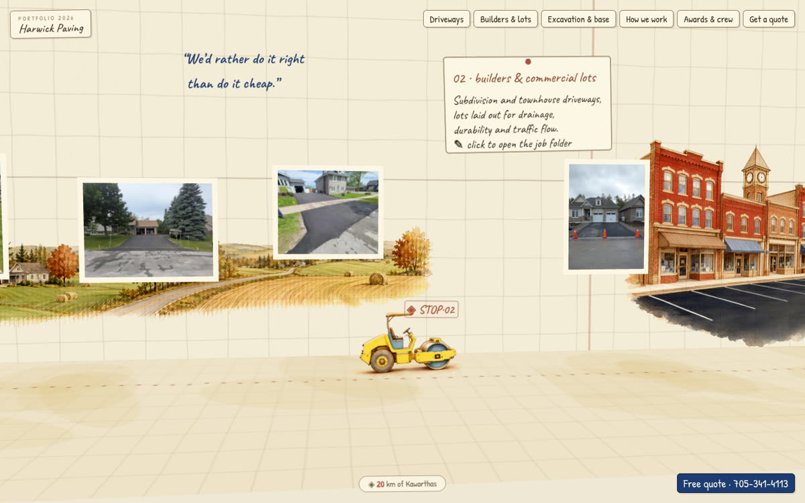

Interactive Paving Season Map & Field GIS Engine
Paving operations cover hundreds of square miles across rural Ontario townships. Prospective commercial clients and municipalities need proof of physical presence, equipment mobilization history, and real job footprints—not generic stock photos.
Engineered systemHand-painted, vector-accurate interactive route map documenting Harwick Paving's entire 2026 paving season across Kawartha Lakes and Durham Region. Built with custom SVG coordinate projections, responsive mobile touch controls, township boundary overlays, and live project detail cards featuring compaction logs, tonnages, and photographic field evidence.
